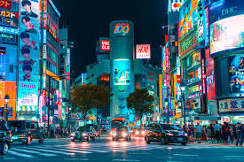

Bali

Bali adalah pulau tropis di Indonesia yang memikat dengan pantai indah, sawah hijau, dan gunung berapi. Dikenal karena budaya Hindu yang kaya, seni tradisional, dan upacara adat, Bali juga menawarkan keramahan lokal dan destinasi wisata populer seperti Ubud dan Kuta.
Total Viewers : 470K
Total Comment : 270K
Tokyo
Tokyo adalah ibu kota Jepang yang dikenal sebagai kota metropolitan yang dinamis. Kota ini memadukan tradisi dan modernitas dengan kuil-kuil bersejarah, taman-taman indah, gedung pencakar langit futuristik, dan pusat perbelanjaan mewah. Tokyo juga terkenal dengan budaya pop, teknologi canggih, dan kuliner lezat seperti sushi dan ramen.
Total Viewers : 763K
Total Comment : 457K
Paris

Paris, ibu kota Prancis, terkenal sebagai "Kota Cahaya" dan pusat seni, mode, dan budaya. Dikenal dengan arsitektur ikonik seperti Menara Eiffel, Katedral Notre-Dame, dan museum Louvre, Paris juga menawarkan suasana romantis dengan kafe-kafe di sepanjang jalan, taman-taman indah, dan seni kuliner kelas dunia.
Total Viewers : 546K
Total Comment : 321K